Desafío UX Research & Strategy · Septiembre 2026
Cuando la app no responde la pregunta que la gente vino a hacer
Nicole Matus
Product Designer, Chile
nicole.matusp@gmail.com
Evaluación heurística del flujo de autoatención de la app Entel, plan de investigación y propuesta de mejora prototipada con IA.
URL del prototipo: https://nicolematusp.github.io/desafio-match/prototipo.html
01 · Método
Qué evalué y cómo
La app de una telco tiene dos misiones al mismo tiempo: resolver la autoatención y vender. Este análisis mira qué pasa cuando lo segundo desplaza a lo primero.
Alcance
Flujo de consumo del plan y Club, en la app mobile. Dos tareas: consultar cuánto queda del plan y acceder a beneficios y puntos.
Método
Evaluación heurística con las 10 heurísticas de Nielsen y escala de severidad de 0 a 4, aplicada sobre recorridos grabados.
Evidencia
3 sesiones de 59 s, 2 m 49 s y 39 s, con medición de tiempos y pasos, más reseñas públicas de App Store y Google Play.
Nota metodológica: evidencia levantada el 18 de septiembre de 2026 en un iPhone 16 Pro con iOS 26.62 y la versión 4.16 de la app, la última disponible. Los datos personales visibles en las capturas fueron difuminados.
02 · La tarea
¿Cuántos gigas me quedan?
Es la razón número uno por la que alguien abre la app de su compañía. No es una tarea de descubrimiento: es una consulta rápida, casi siempre de pie y apurada.
tarda la home en volverse usable
hasta ver el dato de consumo
hasta el detalle, que abre en la pestaña equivocada
buscando unos puntos que ya no existen
03a · Hallazgo 01
La home no dice nada sobre tu servicio
En el primer viewport no hay ni un dato del plan contratado: solo un banner de fibra a $11.990 y cinco accesos rápidos que son, los cinco, de contratación.
En la home completa se cuentan diez módulos comerciales frente a dos de autoservicio, y ninguno muestra el consumo.
10 módulos comerciales · 2 módulos de autoservicio
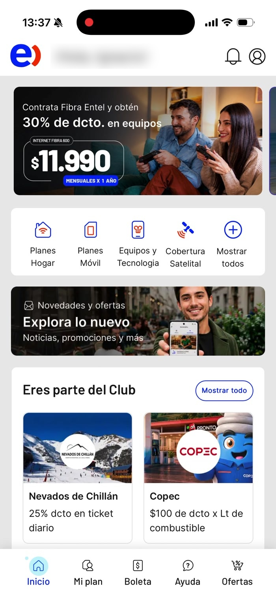
03b · Hallazgo 01, evidencia
Scroll completo de la home
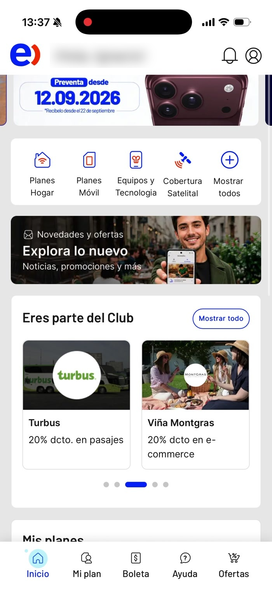
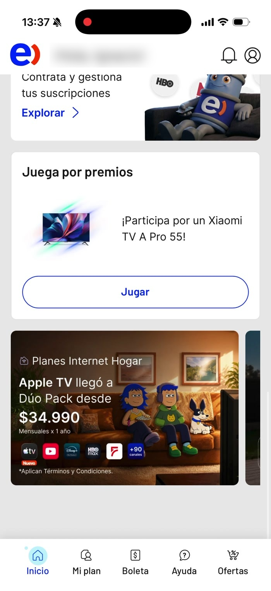
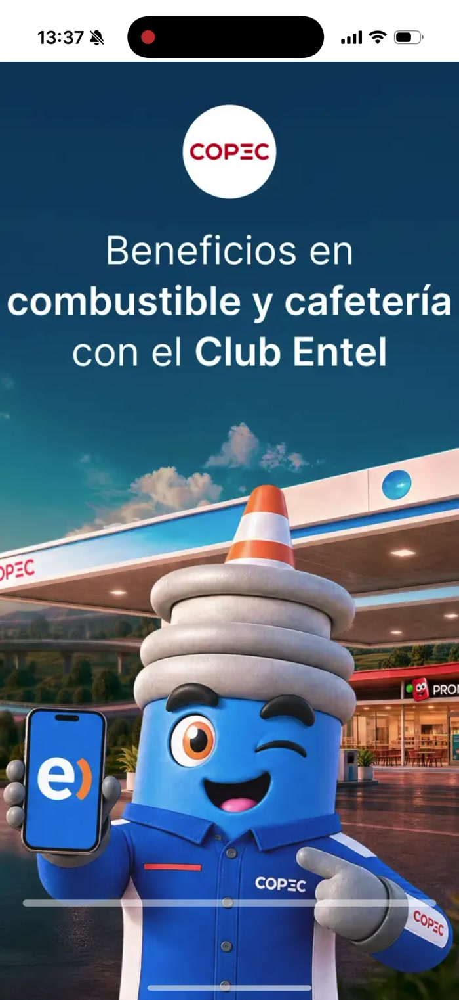
La saturación comercial también tiene un costo comercial: cuando todo compite por atención, el usuario deja de mirar. Y eso afecta justamente a las ofertas que la home intenta empujar.
04 · Hallazgo 02
Tres interrupciones antes de completar una consulta
En las sesiones grabadas aparecen un anuncio a pantalla completa al abrir la app, un modal de oferta al volver a Inicio y un permiso de ubicación al entrar al Club.
Ninguno se relaciona con la tarea en curso y todos exigen una acción para continuar.
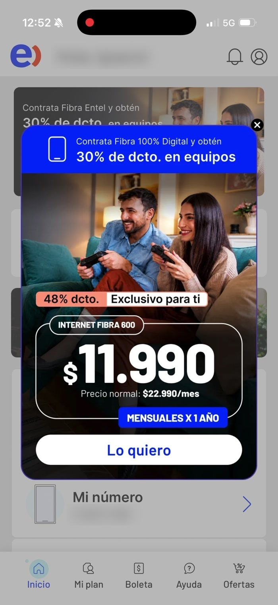
05a · Hallazgo 03
El dato existe, pero está escrito al revés
“Llevas 1 GB de 400 GB · Llevas −360 Min.”
Dos problemas en la misma tarjeta. El primero es de formulación: muestra lo consumido y no lo disponible, y obliga a una resta mental. Nadie abre la app preguntándose cuánto lleva.
El segundo es de confianza: un valor negativo no significa nada para el usuario y pone en duda todo lo demás que muestra la pantalla.
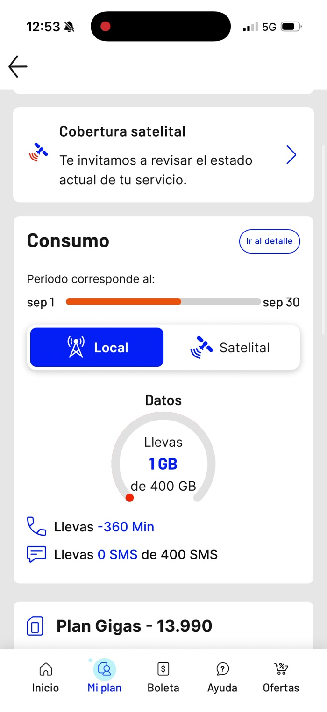
05b · Hallazgo 03, continuación
Y el detalle abre en la pestaña que nadie pidió
Tras 44 segundos de recorrido, la pantalla de detalle se abre en Llamadas y muestra un listado telefónico con duración y monto. Quien venía por sus datos móviles tiene que cambiar de pestaña.
El orden responde a cómo la empresa organiza su facturación, no a lo que la gente consulta.
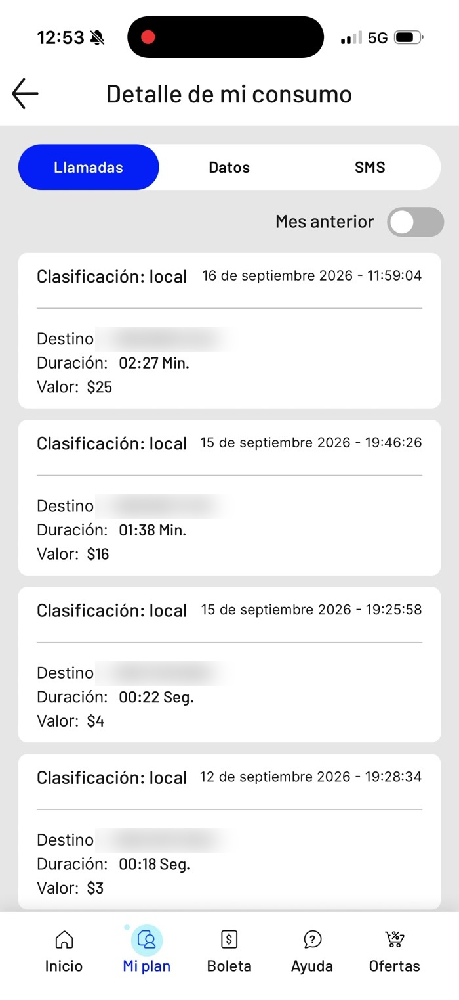
06a · Hallazgo 04
Dos minutos y veintitrés segundos buscando algo que ya no existe
Segunda tarea: revisar los puntos acumulados. El recorrido pasa por el menú rápido, el Club, Beneficios, Eventos y Mis cupones, y en ninguna parte de la interfaz aparecen los puntos ni una explicación.
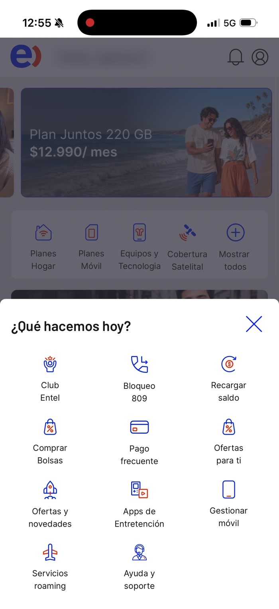
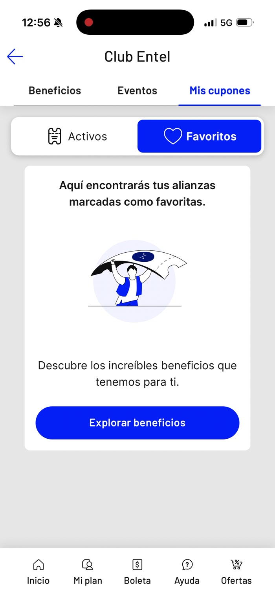
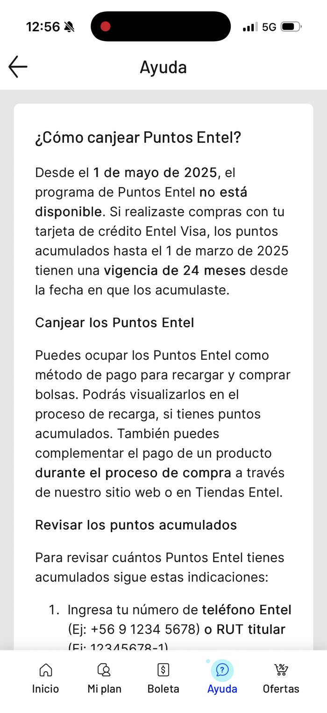
Afecta la confianza en la marca.
06b · Hallazgo 04, el contenido
El único lugar donde se explica, se contradice solo
“Desde el 1 de mayo de 2025, el programa de Puntos Entel no está disponible.”
Y a continuación el mismo artículo explica cómo canjear los puntos y cómo revisar los acumulados ingresando teléfono o RUT en el sitio web.
“Mensajes SMS fraudulentos: actualmente no contamos con un programa de acumulación de puntos…”
La propia compañía advierte sobre estafas que usan los puntos como carnada. El usuario que busca sus puntos en la app y no encuentra nada es exactamente el perfil que después recibe ese SMS sin poder contrastarlo.
Una decisión de contenido y visibilidad aquí no solo reduce contactos a soporte: reduce exposición a fraude.
07a · Síntesis
Cuatro hallazgos, un mismo patrón
La app está organizada según lo que la compañía quiere vender, no según lo que el cliente viene a resolver.
| Hallazgo | Heurística principal | Severidad | Consecuencia |
|---|---|---|---|
| La home no muestra el estado del servicio | #1 Visibilidad | 3 | Navega a ciegas y recurre a otros canales |
| Interrupciones publicitarias durante la tarea | #3 Control y libertad | 3 | Pierde el hilo y acumula fricción |
| Consumo expresado al revés y con valor negativo | #2 y #5 | 4 | Desconfía del dato y lo verifica en otra parte |
| Puntos descontinuados sin señal en la interfaz | #10 y #4 | 4 | Busca, se frustra, contacta soporte o cree en un SMS falso |
07b · Impacto en el negocio
Lo que esto le cuesta a la compañía
No tengo acceso a la data interna de Entel. Lo que sigue son referencias públicas, una medición propia y un modelo abierto que se completa con los números de la compañía.
Costo por contacto
7×Más caro resolver en call center que en autoservicio: US$13,50 frente a US$1,84 por contacto.
Gartner, benchmarks de costo por contacto.
Expectativa de autoatención
81%De los clientes intenta resolver por su cuenta antes de contactar a la empresa. El problema no es de adopción, es que la interfaz no lo permite.
Harvard Business Review. Zendesk mide un 67% que prefiere el autoservicio.
Medición propia
0 de 11Accesos del menú rápido llevan al estado del programa de puntos. Ninguna de las tres secciones del Club lo menciona.
Recorrido grabado el 18 de septiembre de 2026, sesión de 2 min 49 s.
Riesgo de fraude
1 de cada 4Personas en Chile ha caído en una estafa por SMS. Entre las carnadas más usadas está “tus puntos están por caducar, canjéalos ahora”.
ESET Latam. Modalidad documentada en reportes de smishing en Chile, 2025.
Ahorro anual = base de clientes × % que consulta su saldo al mes × % que no logra resolverlo en la app × (costo asistido − costo autoservicio) × 12
Con la data interna de la compañía, este modelo se completa en diez minutos. La estructura del argumento no depende de la magnitud del resultado.
08 · Problema e hipótesis
La interfaz prioriza la venta por sobre la tarea
Quien abre la app para resolver una consulta simple sobre su servicio no encuentra la información en el primer contacto, la encuentra expresada al revés o descubre que la función que buscaba ya no existe. La interfaz prioriza la venta por sobre la tarea.
Si la app muestra el estado del servicio en el primer contacto, expresa el consumo como saldo disponible y comunica con claridad el estado de los beneficios, aumentará la resolución en autoatención y disminuirán los contactos a soporte, sin sacrificar la conversión comercial.
No es usuario contra negocio. Un cliente que ve que le quedan 2 GB es un cliente listo para comprar una bolsa. Mostrar primero el consumo no compite con la venta: la habilita en el momento correcto.
09 · Investigación generativa
Entender el problema desde la voz del cliente
- 8 entrevistas en profundidad con distintos segmentos y edades.
- 5 indagaciones contextuales recorriendo la app en su propio equipo.
- Análisis temático de reseñas públicas y tickets de soporte.
- Análisis del embudo de autoatención para ubicar la caída.
- Encuesta in-app posterior a la consulta, con CES de 1 a 7.
- Cruce con motivos de contacto al call center.
- Qué viene a hacer la gente cuando abre la app.
- Dónde consulta su consumo cuando la app no se lo muestra.
- Qué espera del Club y qué cree que sigue vigente.
Semana 1
Data y reclutamiento.
Semana 2
Entrevistas e indagación contextual.
Semana 3
Encuesta y embudo.
Semana 4
Síntesis, journey map y oportunidades.
Herramientas: Amplitude o GA4 para el embudo, Dovetail para el análisis, Lookback para las sesiones remotas, encuesta in-app y Figma para la síntesis.
10a · Propuesta, pantalla 1
Tu servicio primero
Decisiones de diseño
- Saldo disponible por sobre el consumo: “te quedan 399 GB”.
- Días restantes del ciclo visibles sin abrir nada.
- Oferta contextual solo cuando el saldo baja, en vez de permanente.
- Validación y manejo de errores cuando el dato no está disponible.
Actual
Propuesta
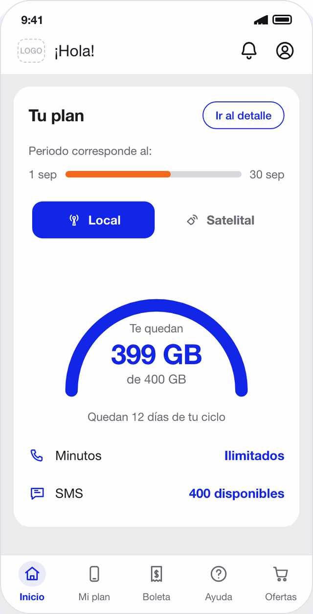
Saldo bajo
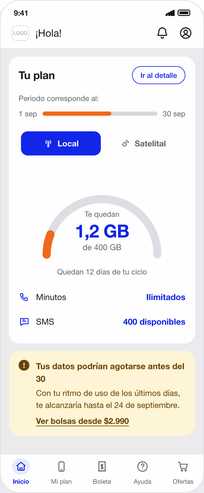
10b · Propuesta, pantalla 2
Un Club sin fantasmas
Decisiones de diseño
- Estado explícito del programa de puntos en la interfaz, no en la ayuda.
- Qué reemplaza a los puntos y cómo se usa.
- Aviso antifraude en el mismo lugar donde nace la duda.
- Beneficios vigentes, filtrables y con estado claro.
La propuesta se limita deliberadamente a dos pantallas: las que concentran la mayor fricción detectada.
Actual
Propuesta
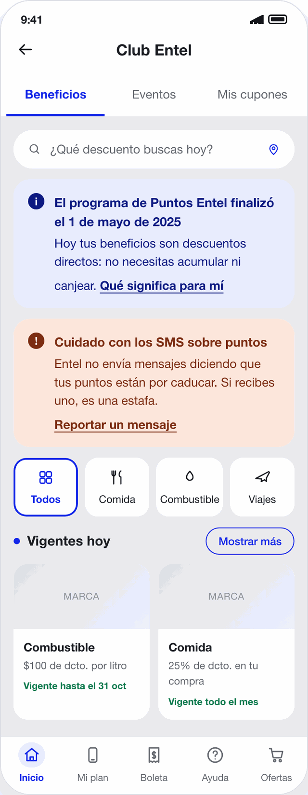
11a · Proceso con IA
Cómo trabajé con la IA
01 Brief
Usuario, tarea, hallazgos priorizados y principios de diseño.
02 Inputs
Las tres grabaciones de pantalla del flujo real, los cuatro hallazgos priorizados con su severidad, y las capturas del estado actual de ambas pantallas.
03 Iteración
Jerarquía, microcopy, estados de error y accesibilidad.
04 Ajuste
Revisión manual de contraste, espaciado y consistencia.
Herramienta: Claude (Cowork). Elegida porque permite generar el prototipo como HTML funcional e integrarlo en esta misma presentación, sin depender de un servicio externo que pueda bloquear el embed o quedar fuera de línea el día de la presentación. Proceso: 2 prompts de construcción y 3 rondas de refinamiento.
URL del prototipo: https://nicolematusp.github.io/desafio-match/prototipo.html
11b · Estrategia de prompts
Dos prompts y tres rondas de corrección
Estos son los cuatro hallazgos de una evaluación heurística de la app Entel, con su severidad y la evidencia en video. Necesito dos pantallas que resuelvan los hallazgos 01, 03 y 04. Tres directrices: expresar el consumo como saldo disponible y no como consumo acumulado; respetar la barra de navegación de cinco ítems del producto actual; y no eliminar lo comercial, sino condicionarlo al contexto de uso.
Entregar los hallazgos priorizados, y no una descripción general del problema, fue lo que evitó una propuesta genérica.
Genera la pantalla de consumo con tres estados —saldo normal, saldo bajo y dato no disponible— y la pantalla del Club con el estado del programa de puntos. El microcopy es este y no debe reescribirse: “Te quedan 399 GB de 400 GB”, “Quedan 12 días de tu ciclo”, “Minutos: ilimitados”, “El programa de Puntos Entel finalizó el 1 de mayo de 2025” y “Entel no envía mensajes diciendo que tus puntos están por caducar”.
Escribir yo el microcopy en vez de delegarlo fue la decisión que más cambió el resultado: el mensaje es la solución al hallazgo, no un detalle de relleno.
1. Corrige los errores que detecté al revisar la salida: los tres estados se muestran simultáneamente por un conflicto de CSS y la cifra principal se corta en dos líneas.
2. El prototipo se ve como una web limpia, no como la app. Replica los patrones reales: fondo gris con tarjetas blancas de esquinas muy redondeadas, el medidor circular de datos, el control segmentado Local/Satelital, la barra naranja del periodo y el pill “Ir al detalle”.
3. Dibuja el set de iconos de línea de la app y replica la barra superior y la inferior.
Las tres rondas nacieron de comparar el prototipo contra las capturas reales, no de pedirle a la herramienta que mejorara por su cuenta. La salida de una IA no se entrega sin revisar.
La IA aceleró la ejecución, no el criterio. Los hallazgos, la priorización, el microcopy y la decisión de reutilizar los componentes existentes en vez de rediseñar el sistema visual son decisiones de diseño, y son las que sostienen la propuesta.
12 · Investigación evaluativa
Cómo sabré que la solución funciona
Test de usabilidad moderado
6 participantes, tareas reales de consultar saldo y entender el estado de los beneficios. Métricas: tasa de éxito, tiempo hasta el dato, errores y SEQ.
Test no moderado
40 a 60 participantes en Maze. Mapa de calor, tasa de clic erróneo y abandono por pantalla.
Test A/B en producción
Métrica principal: consultas de saldo resueltas en la app. Secundarias: contactos a soporte, uso de beneficios y conversión de las ofertas contextuales.
de éxito en la tarea principal
hasta el dato desde abrir la app
en escala de 1 a 7
guardarraíl: la conversión comercial no cae
El guardarraíl es deliberado: la propuesta se defiende solo si mejora la autoatención sin castigar los ingresos del canal.
13 · Cierre
Una app que responde primero, vende mejor después
Gracias por la lectura. Quedo disponible para revisar en detalle las decisiones de investigación y de diseño detrás de cada sección.
Nicole Matus
Product Designer, Chile
nicole.matusp@gmail.com
Desafío UX Research & Strategy · MATCH · Septiembre 2026
URL del prototipo: https://nicolematusp.github.io/desafio-match/prototipo.html
Nota metodológica: evidencia levantada el 18 de septiembre de 2026 sobre la versión 4.16 de la aplicación, en un iPhone 16 Pro con iOS 26.62. Los hallazgos describen ese estado del producto.